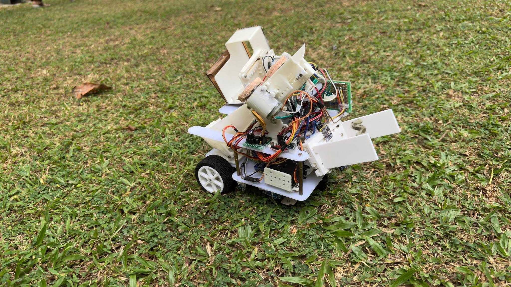
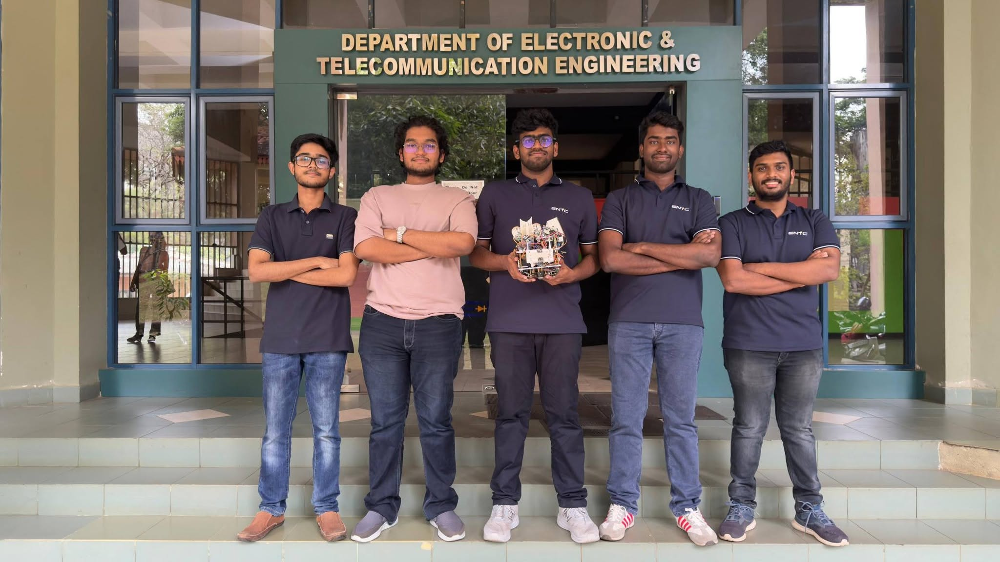

Autonomous Mobile Robot
3rd SemDesigned and built a multi-functional autonomous robot executing line and wall-following algorithms. Led mechanism design for structural stability. Utilized SolidWorks for custom chassis CAD modeling. Ensured integration of all sensors, motors, and electronics.
Team: Pawara, Deneth, Akhila, Rumeth, Jaindu